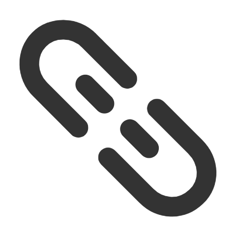

扫码 加入我们~~
精品内容

生活随笔
-

Sunshine--阳光
不要活的太累，不要忙的太疲惫;想吃了不要嫌贵，想穿了不要说浪费;心烦了找 朋友聚会，瞌睡了倒头就睡。心态平和永远最美，天天快乐才对! -- 寄语
在这座被阳光宠爱的小屋前，治愈的旋律缓缓流淌，每一个角落都充满了温暖与希望。
清晨，当第一缕阳光轻轻拂过窗帘，唤醒了沉睡的小屋，治愈的旅程便开始了。院子的花草在晨光的抚摸下，慢慢舒展着身姿，露珠在叶片上闪烁，如同大自然洒落的珍珠。小鸟在枝头欢快地歌唱，它们的歌声是那样的清澈，仿佛能够洗净心灵的尘埃。
走进小屋，一股淡淡的香气扑鼻而来，那是从厨房传来的咖啡和烘焙的香味。墙上挂着的家庭照片，记录着岁月的痕迹，每一张笑脸都是治愈的力量，让人感受到家的温暖...
-

Friend--友谊
假如我有这样的朋友:能读懂我，能穿过层层面具，如入无人之境的走进我的心灵，用一种彼 此都懂的语言来和我进行灵魂的对话和交流--寄语(珍惜)
在这个纷扰的世界中，我一直在寻找，寻找一个能读懂我的朋友，一个能穿过我层层面具，直抵我心灵深处的知己。假如我有这样的朋友，那该多好：我们用一种彼此都懂的语言，进行灵魂的对话和交流。
我曾以为，这样的朋友是遥不可及的幻想，是生命中不可多得的奢侈品。直到有一天，在阳光洒满的午后，我遇到了你。你不是一个奇迹，却让我感受到了奇迹般的存在。在你的眼中，我看到了自己的倒影，那么真实，那么纯粹...
-

Village--乡村
太阳暖一点，再暖一点，生活慢一些，再慢一些，就是我要想的恬恬淡淡的，悠悠然然的日常生活.--寄语(累了就来吧)
乡村，这个字眼总是让人联想到宁静、和谐与自然之美。它远离城市的喧嚣与繁华，保持着一种独特的朴素与纯真。乡村的美，美在它的朴素，美在它的宁静，更美在它所蕴含的那份深厚的历史与文化底蕴。
乡村的房屋，没有城市的高楼大厦，却有着独特的韵味。白墙黑瓦，错落有致，仿佛一幅美丽的画卷。那些古老的树木，历经岁月的沧桑，依然屹立不倒，它们是乡村历史的见证者，也是乡村文化的传承者。
乡村的小路，蜿蜒曲折，像一条玉带一样缠绕在田野之间。走在乡村的...